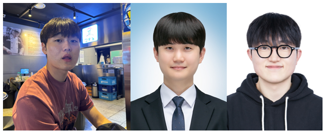

매주술권장협회
Ministry of Weekly Soju Affairs · 공식 아카이브
Ministry of Weekly Soju Affairs · 공식 아카이브
‘매주 술 권장 협회’는 친목과 교류 중심의 민간 커뮤니티로, 정기 모임과 C-Level Inner Circle Meet Up 등을 통해 회원 간 네트워크 활동을 이어가고 있는 단체이다.
협회장 · 소주 3병
매주술권장협회 협회장 / 국내 유일 주량평가 및 만취등급 심사위원
텍사스지부 부장 · 소주 4병 이상
해외지부 운영실장 / 음주문화체육관광부장관 겸임
상근부회장 · 소주 2병
정기모임 운영, 의전, 밑잔 사전탐지 및 즉시대응 담당관

‘매주 술 권장 협회’가 오는 22일 경기 용인시 수지구 풍덕천동에서 비공개 형태의 ‘이너서클 밋업’을 개최한다.
이번 밋업은 협회 핵심 운영진 중심의 소규모 네트워킹 행사로, 음주와 인간관계, 음주 기반 커뮤니티 운영 방향 등을 주제로 자유로운 교류가 이뤄질 예정이다.
행사에는 한창희 협회장을 비롯해 김성민 텍사스지부 부장, 최민규 상근부회장이 참석한다.
참석자들은 최근 변화하는 음주 문화와 친목 커뮤니티 운영 방향을 비롯해, 협회 내부 운영 과정에서 제기된 일부 비협조적 인물들에 대한 대응 방향과 조직 안정화 방안 등에 대해서도 의견을 교환할 예정이다.
이번 행사는 금요일 오후 10시부터 진행되며, 참석자 간 자유로운 네트워킹과 교류 중심으로 운영될 예정이다.
‘매주 술 권장 협회’는 친목과 교류 중심의 민간 커뮤니티로, 정기 모임과 번개 밋업 등을 통해 회원 간 네트워크 활동을 이어가고 있다.